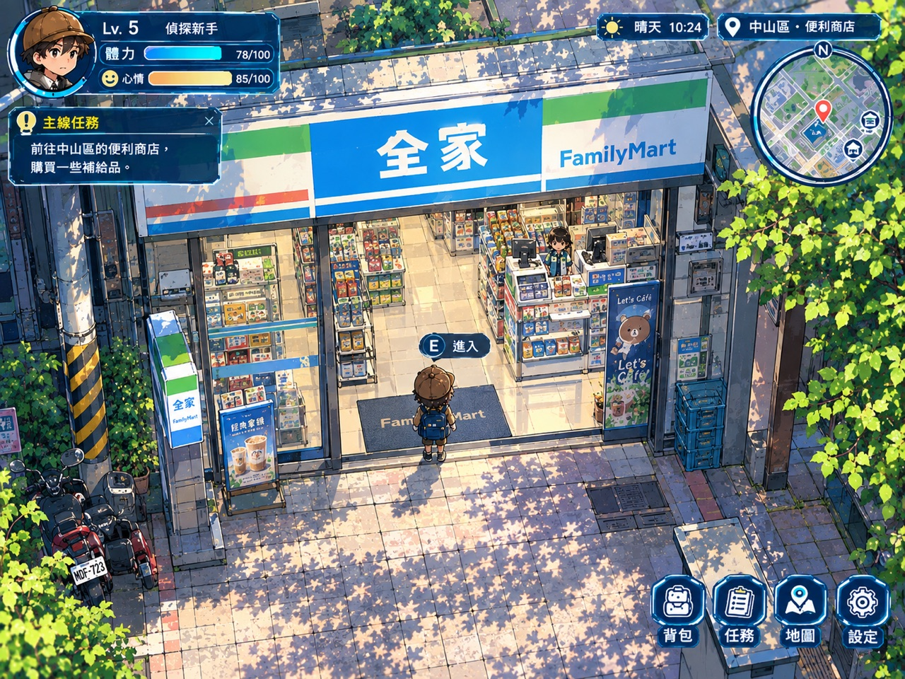
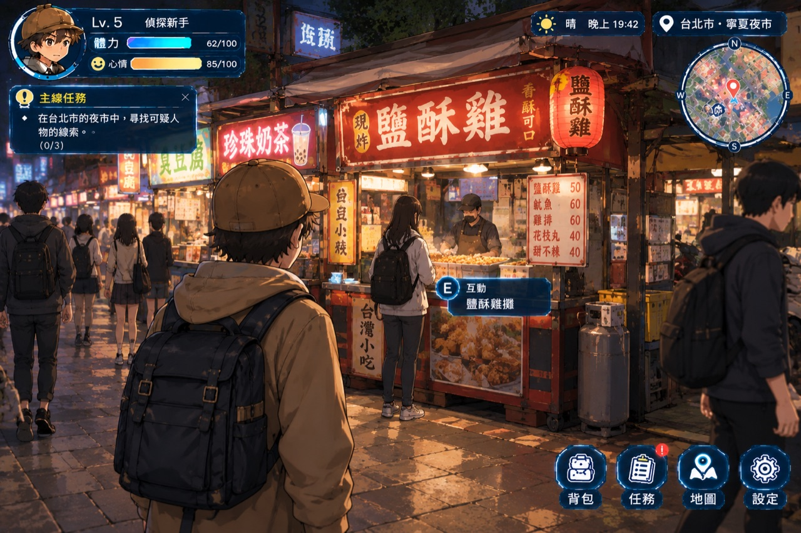
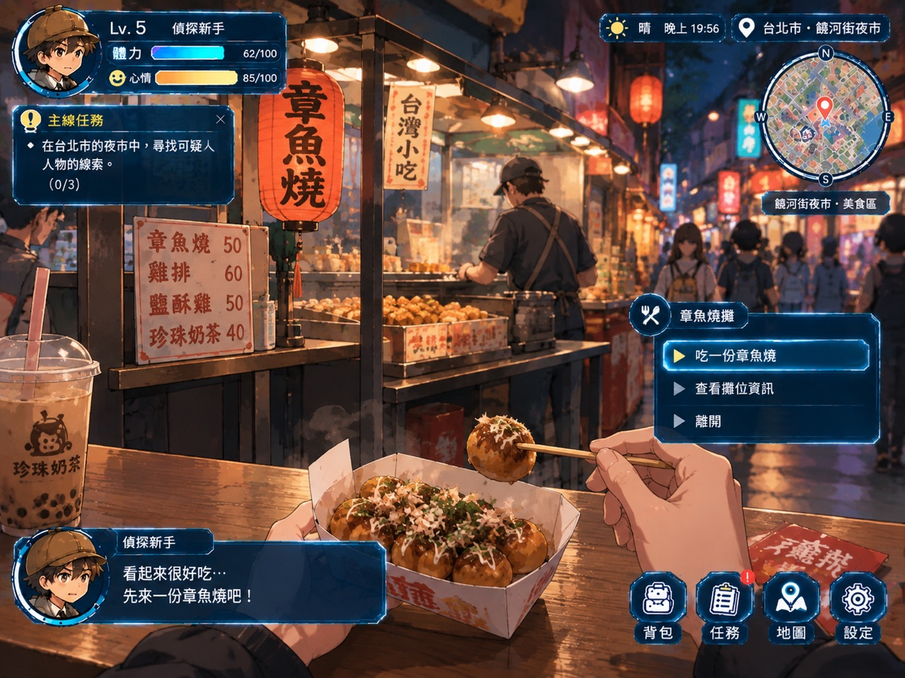
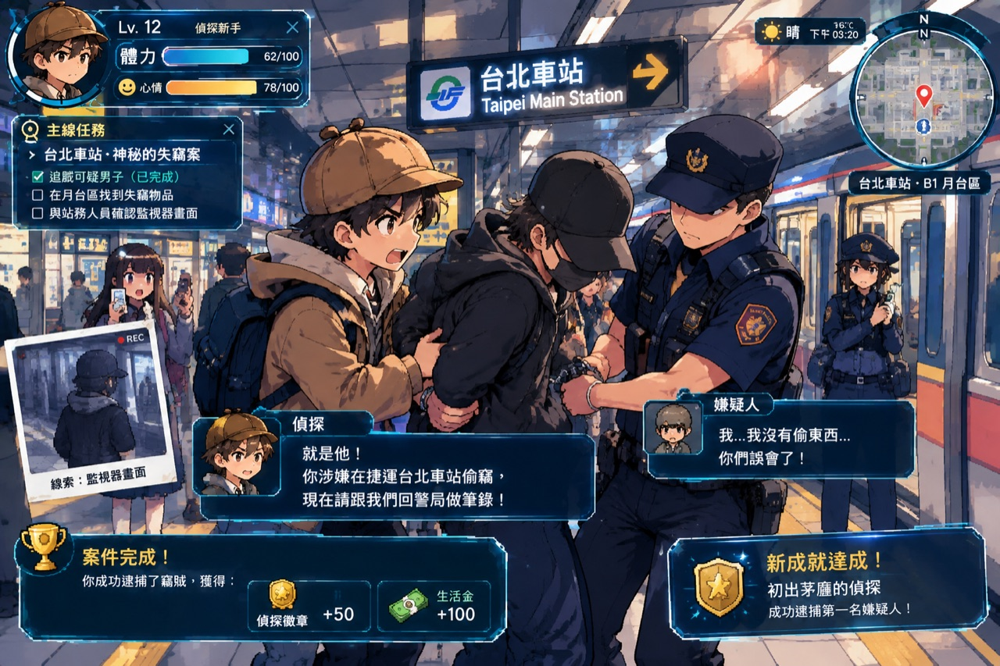
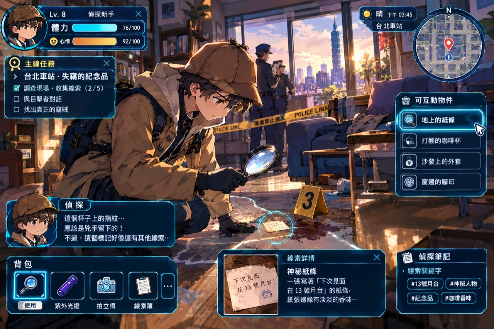
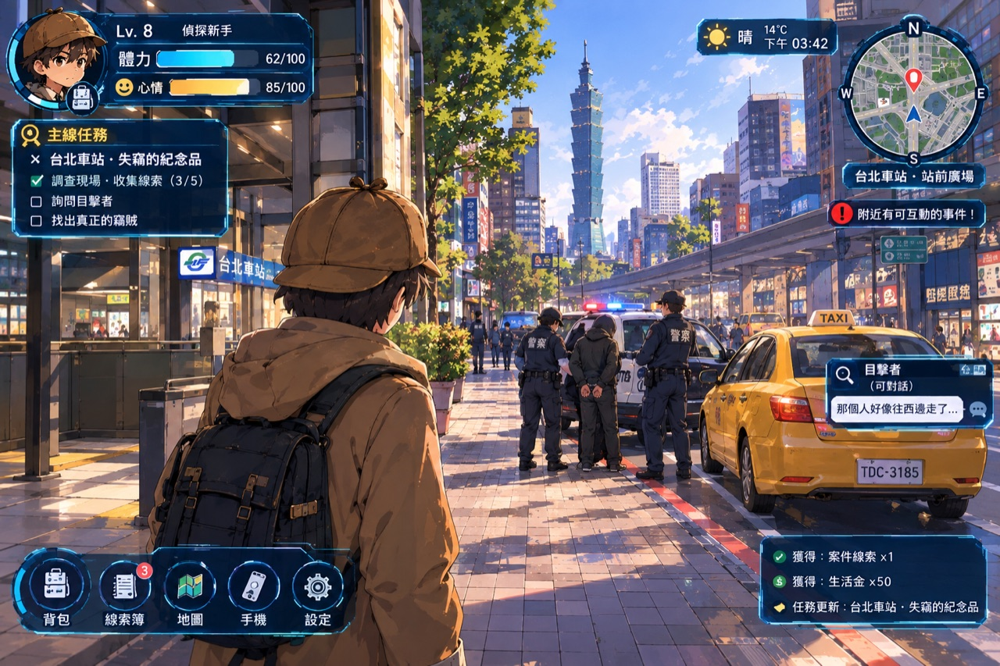
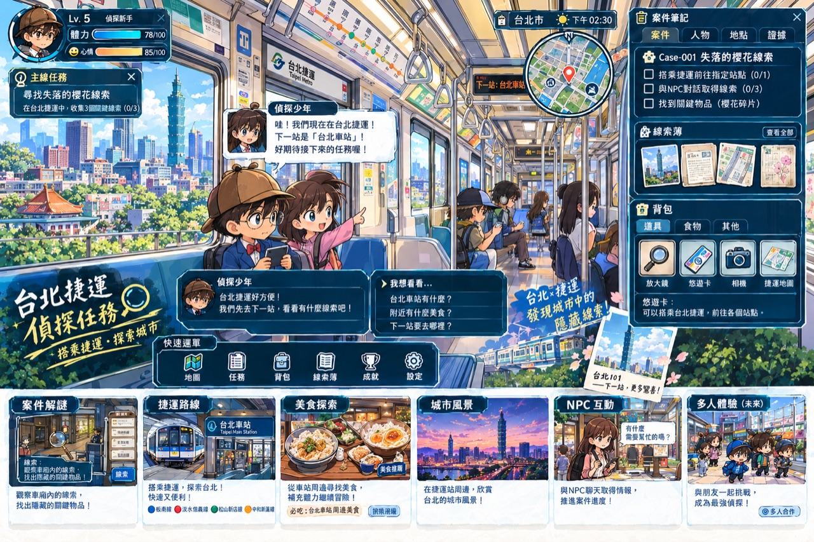

店員熱情招呼：「大偵探歡迎光臨！今天中山區陽光正好呢！」

香酥可口九層塔香！老闆：「小偵探辦案辛苦了！這份剛炸好的最酥脆！」

柴魚片飛舞、日式醬汁濃郁，吃完體力與心情瞬間回滿！
《城市脈動：通勤偵探》核心玩法：犯罪無法避免移動，每一次捷運進出站、公車扣款、監視器車牌都是破案手術刀！
監視器於 14:40 拍到黑帽口罩男子趁人潮擁擠偷取遊客公事包，隨後慌張跑進 B1 月台，並在花圃旁遺留一張暗號紙條！

請選擇出示正確的鐵證當場打臉：
你運用了悠遊卡時序比對與 CCTV 軌跡分析，成功戳破嫌疑人的不在場謊言，追回所有失竊物品！

在月台花圃旁拾獲，記錄著「R10 ➔ BL12」的轉乘路線。

司機證實看見黑帽男子神色慌張地跑向全家便利商店。

台北車站（紅線 R10 ✕ 藍線 BL12）為核心樞紐，可搭捷運前往西門町與淡水老街！
名著啟發： 改編自青山剛昌《名偵探柯南》中經典的「不在場證明」與「聲學延遲」本格推理手法。 自然科學原理： 長廊聲波多重反射造成回聲，配合電子票證打卡紀錄，精準拆穿時間差假象！ 雙北在地特色： 融入台北車站地下街縱橫交錯的真實動線與全家超商生活文化。
本遊戲支援國小六年級同學在同一個私服世界實例中「同屏共享、實時可見」！
💡 提示：若在本地執行，請在終端機輸入 node server.js 即可啟動私服器！若在 GitHub Pages 則自動啟用模擬同儕偵探。
node server.js